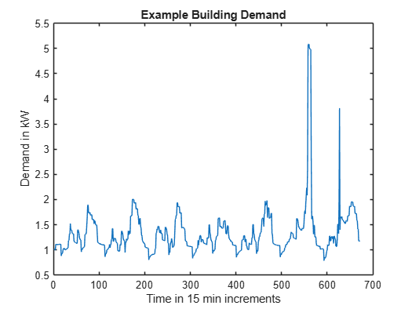

Summary / Introduction
Frame the utility pricing decision and define the managerial question.
Open pageThe project asks how a residential utility should design rate plans when customers differ in willingness to pay, technology adoption, and ability to shift load. A rate can reduce customer bills and still improve utility economics if it avoids enough high-cost evening energy and scarce capacity.

The utility is modeled as a regulated residential provider, not a competitive retailer. Rates must be simple enough to defend in a public utility commission filing and stable enough to recover costs over a multi-year rate case.
Frame the utility pricing decision and define the managerial question.
Open pageTranslate customer heterogeneity into WTP and demand-response assumptions.
Open pageDefine the objective, decision variables, and operating constraints.
Open pageExplain how the formulation becomes a reproducible browser model.
Open pageExplain the difference between paying for consumed kWh and keeping enough grid capacity ready for peak demand.
Open pageDefine the fixed 10,000-home portfolio used by the pricing results.
Open pageCompare flat, TOU, and demand-charge pricing as single universal plans.
Open pageAdd multiple plans, customer choice, revenue leakage, and adverse selection.
Open pageClarify which assumptions need better data or regulatory review.
Open pageState the recommendation and the management implication.
Open pageStart with customer heterogeneity, convert it into a rate-design model, test one-plan pricing, then test whether multiple plans still work once customers can self-select.